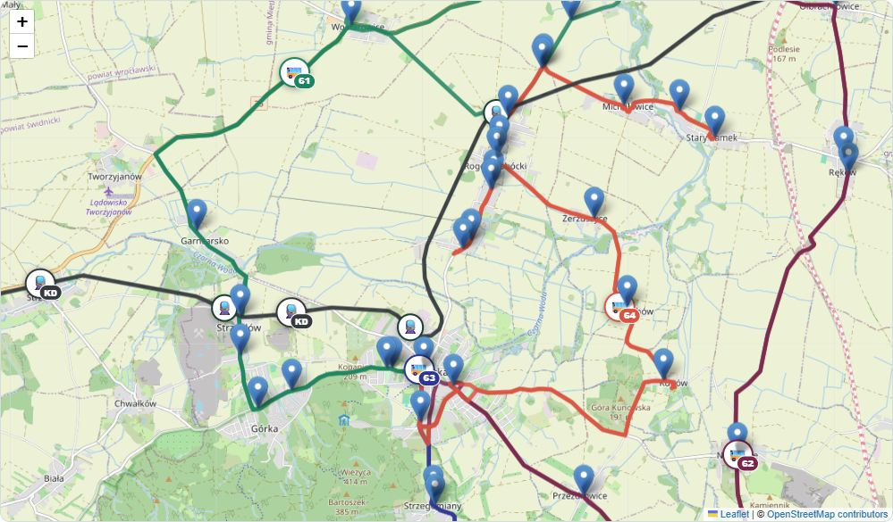

Znajdź proponowane połączenie
Co projekt oferuje na moim przystanku?
Linie i kierunki
Rozkład
Mapa projektowanej komunikacji
Na mapie przedstawiono przystanki, trasy autobusowe oraz stacje kolejowe objęte projektem.
Czy projekt odpowiada Twoim potrzebom?
Opisz przykładową podróż, którą wykonujesz lub chciałbyś wykonywać komunikacją gminną. Pomoże to ocenić, czy proponowane połączenia i godziny odpowiadają realnym potrzebom mieszkańców.
1 Opisz swoją podróż
2 Czy projekt odpowiada tej potrzebie?
Oceń dostępne połączenia, godziny kursowania i czas podróży.
3 Chcesz coś dodać?
Projekt komunikacji
Gminy Sobótka
Sprawdź proponowane połączenia autobusowe, możliwości dojazdu do kolei i zobacz, jak projekt może działać w Twoich codziennych podróżach.
Co obejmuje projekt?
Najważniejsze liczby opisujące proponowaną komunikację autobusową oraz jej powiązanie z koleją.
Co możesz tutaj zrobić?
Sprawdź projekt na własnym przykładzie. Wybierz interesujące Cię połączenie, zobacz rozkład swojego przystanku albo poznaj cały układ komunikacji na interaktywnej mapie.
Znajdź połączenie
Wybierz przystanek początkowy i docelowy oraz interesującą Cię godzinę. Sprawdź, jakie połączenia oferuje projekt.
Mój przystanek
Wybierz konkretny przystanek i zobacz wszystkie projektowane odjazdy, obsługujące go linie oraz możliwości dojścia do kolei.
Interaktywna mapa
Zobacz cały projekt na mapie. Sprawdź przebieg linii, położenie przystanków i stacji kolejowych oraz uruchom symulację ruchu autobusów i pociągów.
Autobus + kolej
Sprawdź możliwości dalszej podróży koleją przez stacje Rogów Sobócki, Sobótka i Sobótka Zachodnia oraz rozkład pociągów na trasie Wrocław – Świdnica – Wrocław.
Zobacz, jak projekt działa w ciągu dnia
Na interaktywnej mapie możesz zobaczyć przebieg wszystkich linii autobusowych, przystanki, stacje kolejowe oraz linię kolejową Wrocław – Świdnica.
Uruchom symulację, ustaw interesującą Cię godzinę i obserwuj planowany ruch autobusów oraz pociągów.

Jedna podróż, różne środki transportu
Projekt komunikacji gminnej uwzględnia możliwość kontynuowania podróży koleją w kierunku Wrocławia lub Świdnicy.
Na terenie Gminy Sobótka znajdują się trzy stacje kolejowe:
- Rogów Sobócki
- Sobótka
- Sobótka Zachodnia
W aplikacji możesz sprawdzić położenie stacji, rozkład pociągów oraz zobaczyć, które przystanki autobusowe znajdują się w ich pobliżu.
Jak działa symulacja?
Ustaw interesującą Cię porę dnia i zobacz, jak według projektu poruszają się autobusy i pociągi.
Ustaw godzinę
Zacznij od aktualnej godziny albo przesuń czas o godzinę do przodu lub do tyłu.
Uruchom symulację
Kliknij „Play” i wybierz tempo, w jakim ma płynąć czas symulacji.
Obserwuj ruch
Zobacz na mapie planowany ruch autobusów i pociągów zgodnie z rozkładami jazdy.
Twoja opinia ma znaczenie
Projekt komunikacji powinien odpowiadać na rzeczywiste potrzeby mieszkańców. Dlatego zanim ocenisz projekt, sprawdź go na przykładzie swojej codziennej podróży.
Zobacz proponowane połączenia, godziny kursowania i możliwości dojazdu, a następnie powiedz nam, czy takie rozwiązanie byłoby dla Ciebie użyteczne.
Zanim zaczniesz korzystać
Kilka rzeczy, o których warto pamiętać podczas przeglądania projektu.
To jest projekt
Prezentowane linie, przystanki i godziny nie są obecnie obowiązującym rozkładem jazdy. Służą do przedstawienia rozwiązania, które jest poddawane konsultacjom.
Symulacja pokazuje planowany ruch
Pozycje autobusów i pociągów są obliczane na podstawie rozkładów i przebiegu tras. Nie jest to podgląd rzeczywistych pojazdów ani ich aktualnych opóźnień.
Opinie są obecnie zapisywane lokalnie
W tej wersji demonstracyjnej odpowiedzi pozostają w przeglądarce na Twoim urządzeniu. Nie są jeszcze automatycznie przesyłane do wspólnej bazy konsultacji.